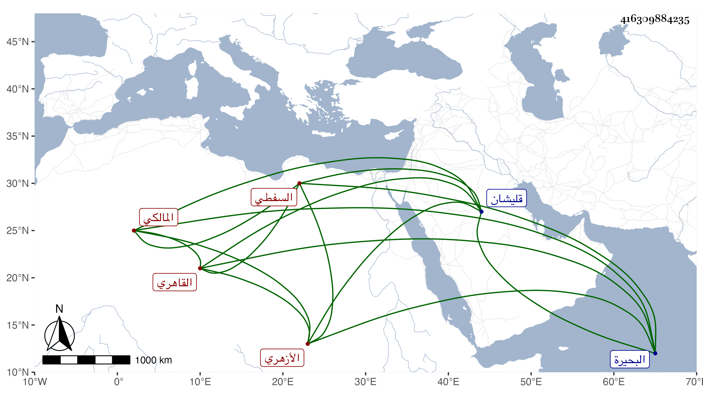

0902Sakhawi.DawLamic.ITO20230111-ara1.EIS1600.416309884235
Biography ID: 416309884235
176
علي نور الدين السفطي نسبة لسفط قليشان بالبحيرة ثم القاهري الأزهري المالكي ويعرف بالوراق لنزوله حين قدومه من بلاده عند أحمد الوراق واسم والده حجاج . حفظ القرآن وكتبا واشتغل كثيرا ولازم الزين عبادة بل أخذ يسيرا عن البساطي وغيره وانتفع بابن المجدي في الفرائض والحساب وغيرهما وبالحناوي وغيره في العربية وبالمحلى في الأصول قرأ عليه شرحه لجمع الجوامع وكذا أخذ عن الأمين الأقصرائي ولازمه وابن الهمام والشمني وسمع الزين الزركشي وغيره والكثير على شيخنا ومن ذلك الشاطبية بقراءة التاج السكندري وتصدى لإقراء الطلبة في الفقه وأصوله والعربية وغيرها فانتفع به جماعة وممن قرأ عليه العربية أخي الزين أبو بكر وكان كثير الابتهاج به والثناء عليه والشرف عبد الحق السنباطي والزين يس البلبيسي والخطيب الوزيري ، وتنزل في صوفية الأشرفية برسباي أول ما فتحت وتكلم في وقف طوغان دوادار تغرى بردى البكلمشي وعظم اختصاصه بالحسام بن حريز بحيث استنابه في تدريس الصالحية بل يقال أنه فوض إليه القضاء وأن الوراق قرأ عليه ، وكان إنسانا خيرا متواضعا قانعا منجمعا متوددا محبا في الفضلاء بلغني أنه كتب شيئا في الحساب وعمل منسكا ولم يكن بالذكي مع اعتنائه بالرمي ووقوفه مع الرماة بالمرمى التي بالمخيميين . مات في شعبان سنة أربع وستين عقب موت أولاده بالطاعون وقد جاز الستين وصلي عليه في باب الوزير ودفن بالقرب من تربة قلمطاي رحمه الله وإيانا .
